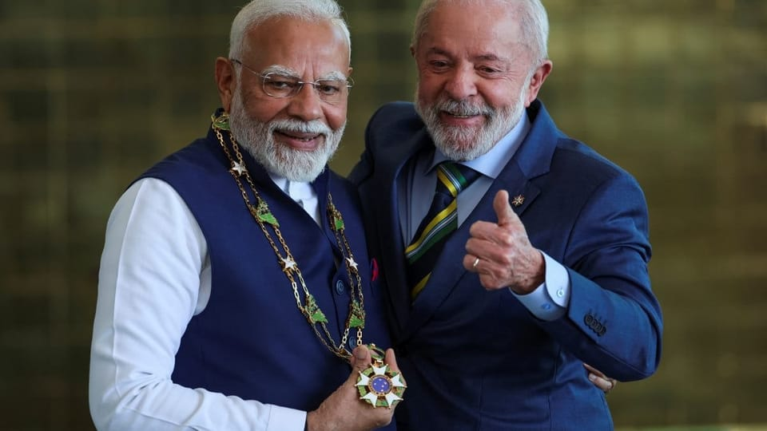

世界苦茶08月07日新闻 | 41条 | 特朗普导致中印巴西关系快速接近

特朗普导致中印巴西关系快速接近 | 特朗普将下周会晤普京 | 美对印度再加25%关税 | 特朗普将宣布药品和半导体关税 | 新疆网红景点垮塌多人死伤 | 亮证女被拘留5日
新增Substack，每週2-3更，歡迎關注
每日三條新聞解析
苦茶数据
美元兑人民币：7.18（昨日7.19，前日7.18）
美元兑日元：147.30（昨日147.36，前日147.17）
上证指数：3637（昨日3627，前日3614）
标普500指数：6345（昨日6299，前日6229）
比特币：114263（昨日113458，前日114443）
布伦特原油：67.37（昨日68.07，前日68.74）
中国新闻
• 新疆伊犁昭苏县夏塔景区吊桥桥索断裂致使桥面倾斜，造成桥上29人滑落。其中，5人遇难，22人轻伤，2人重伤。目前景区已关闭，事故原因正在调查中。 （翻评：我之前就觉得这种网红景点安全性是不靠谱的。）
• 地方政府文件频现抄袭 ：中国接连发生两起地方政府公文抄袭事件，引发舆论关注。多名公务员称，文件互抄在基层较为普遍，“不仅是本地区不同层级之间，跨省市抄袭早已屡见不鲜”。据《中国新闻周刊》报道，山西省忻州市五台县7月9日的一篇县长调研稿，与7月5日当地五台山景区党工委副书记调研稿内容高度雷同，约390字的全文中有超过320字重复。此外，广西省平乐县发布的《平乐县森林防火规划（2023—2030年）》中，水文数据相关内容抄袭了湖南省安化县的介绍文本，连安化县的乡镇名也没有进行修改，出现了“平乐指导安化”的闹剧。
• 中方称将促柬泰和平 ：泰国和柬埔寨达成停火协议、结束泰柬边境冲突后，中国外交部说，中国将继续以自己的方式为柬泰关系转圜发挥建设性作用。中国外交部发言人郭嘉昆星期二在例行记者会上说，自7月30日中国、柬埔寨和泰国三方非正式会晤成功举行以来，柬泰边境未再发生交火。现地局势持续趋缓，柬泰停火共识正逐步落实。他提到，在亚细安轮值主席国马来西亚的协调下，柬泰双方举行边界总委员会会议，就制定停火监督机制细化方案进行多渠道、多层级沟通，有利于实现有效、可持续停火。中方对此表示赞赏和欢迎。
• 韩将试行对华团客免签 ：韩国政府将从9月29日起面向中国团体游客试行免签入境政策，持续至明年6月30日。据韩联社报道，韩国国务总理金民锡星期三在中央政府首尔办公楼主持召开提振旅游业政策工作组会议，作出上述决定。韩国政府称，在旅游市场快速复苏的情况下，此举有望带动潜在访韩旅游需求增长，有助于搞活地方经济和刺激内需。
• 广州滑坡致多房屋垮塌 ：中国广州连日强降雨后发生山体滑坡，导致数座自建房垮塌多人被困，目前已有七人被救出。中国央视新闻报道，广东省广州市应急管理局消息称，星期三上午接获民众报警，指白云区大源街颐雅苑附近疑似发生山体滑坡，有房屋垮塌，多人被困。白云区应急、消防、公安和住建等部门人员已抵达现场，展开紧急救援。
• 医生遭网暴坠楼身亡 ：河南一名妇产科医生坠楼，她生前曾为一名羊水栓塞产妇切除子宫保命，但被产妇家属以“绝后”为由勒索并网暴，导致医生轻生。综合上观新闻和中国新闻周刊报道，周口市第六人民医院57岁的邵姓女医生8月1日坠楼身亡。邵医生的丈夫张先生说，邵医生在遗书中详细写下导致她被网暴的三起医疗纠纷的具体情况。
• 少林寺改革引离职潮 ：少林寺新任住持释印乐上任后，掀起“去商业化”改革。网传少林寺数十名僧人因受不了新规而离开。“少林寺离职潮”星期二一度冲上微博热搜。少林寺原住持释永信被查后，新住持印乐上任第二天，中国媒体实地报道，寺庙已取消之前的一些收费项目，包括佛殿前的“平安香”等高价香已消失，举着二维码收费的武僧也不见踪影。据传，印乐上任首日便推出五项改革，包括关停商业演出、禁止高价开光、清理寺内商铺、推行农耕自给、改革收入分配。
• 浙大教师坠亡引发关注 ：网传浙江大学一名30多岁的青年教师坠楼身亡，再掀中国高校科研内卷舆论，校方回应中国媒体说，消息暂时不对外透露，下来会发布通知。据极目新闻报道，多名中国网友星期二在社媒平台发帖，称浙江大学生物系统工程与食品科学学院一名青年教师，星期一在浙大紫金港校区坠楼，不幸身亡。浙大官网显示，这名教师是特聘副研究员、博士生导师，从事果蔬采收装备、农业机器人、仿生软体机器人等方向研究。
• “亮证女”被拘留5日 ：防城港“亮证女”侯某某被行政拘留5日。防城港市公安局8月5日公开行政处罚决定书，表示根据《治安管理处罚法》第五十一条作出上述决定。根据《治安管理处罚法》第五十一条，冒充国家机关工作人员或者以其他虚假身份招摇撞骗的，处五日以上十日以下拘留，可以并处五百元以下罚款；情节较轻的，处五日以下拘留或者五百元以下罚款。此外，在最初版本的行政处罚决定书中，违法人员侯某某的姓名被打码，但受害者李某某的姓名和车牌号被公开。随后经改正后隐去。
• 德华裔被控替中从事间谍 ：德国选择党一名议员的前华裔助手被控为中国从事间谍活动，案件进入法庭审理阶段。据彭博社报道，德累斯顿法院发言人说，被告人通过律师否认了控罪。此人为德国公民，身份用Jian G.表示。在他被指控的罪行发生时，被告为时任欧洲议会议员马克西米利安·克拉工作。克拉现在身为德国联邦议院选择党议员，去年在Jian G.被捕后将他解雇。
亚太印太新闻
• 台美军事合作共识强 ：美国国务院前资深顾问惠顿称台湾政策让台湾与美国总统特朗普渐行渐远，台湾国防部长顾立雄质疑这个说法并不公允，他强调包括军售、台美训练交流等，都显示台美对于维护区域安全都有高度共识。综合《联合报》、风传媒、央广网等报道，惠顿星期二以《台湾如何失去特朗普》为题撰文，指台湾政策让台湾与特朗普渐行渐远。顾立雄星期三上午出席军人节敬军记者会后受访时称，惠顿的说法并不公允。顾立雄说，美商Anduril制造的Altius-600M攻击型无人机首批已迅速交运台湾陆军、台湾会持续编列国防特别预算，以及台美之间的各项军事训练与交流，都显示双方对维护区域安全稳定有非常高度的共识，也符合双方的核心利益。
• 李大维谈特朗普智慧 ：台湾前外长李大维谈及台美关税谈判时说，对美国总统特朗普而言，凡是有利可图的事他就会做；台湾对美国具有不可替代的战略价值，特朗普没那么笨，不会轻易浪费台湾这张牌，“他心里有数，只是在砍价”。综合台湾《太报》和中时新闻网报道，李大维星期三接受网络节目专访时说，特朗普上任已半年多，他就是交易性格的企业家，擅长讨价还价，“把国家当成生意，对美国有利他就愿意做，选谁获利最高他就选谁”。李大维还说，不要低估特朗普的智慧，台湾对美国的国家利益有无可取代的价值，从台积电等高科技公司在全球产业链的关键地位，到台湾位处的第一岛链位置，都是无可取代的事实。特朗普当然晓得，也不会轻易浪费这张牌，不要一天到晚担心被牺牲掉，特朗普没那么笨，台湾有筹码，特朗普也心里有数，他只是在杀价，“只是过去没有总统会亲自做这件事”。
• 柬反驳泰主权指控无据 ：柬埔寨外交部发言人宗松里说，泰国指控“柬埔寨以军力及武器侵犯泰国主权，并造成泰国军民生命与财产重大损失”的法律行动，“毫无根据”。新华社报道，宗松里在星期三的发布会上说，泰国要采取的法律行动毫无根据、出于政治动机且缺乏令人信服的依据。柬埔寨强烈反对有关指控，并重申柬方并未挑起敌对行动。宗松里表示，尽管不断受到挑衅，柬埔寨仍然致力于和平，并完全遵守停火协议。泰国首相府发言人集拉育星期二说，泰国代首相蓬探当天在内阁会议上下令，要求相关部门起草法律文件，针对柬埔寨“以军力及武器侵犯泰国主权并造成泰国军民生命与财产重大损失”，在国内及国际层面提起刑事与民事诉讼。
• 韩前第一夫人接受调查 ：韩国前总统尹锡悦夫人金建希星期三以嫌疑人身份就她所涉弊案公开到案，接受独立检察组调查。韩联社报道，金建希上午9时30分左右从首尔瑞草区住处出发，于10时11分左右到达位于首尔钟路区KT大厦的独检组办公室。金建希在走进大厦前，站在媒体镜头前自称是“无足轻重的人”，她说：“我为自己这样无足轻重的人让全国人民忧虑。深感抱歉。我将认真接受调查。”
• 韩朝互动单方面受质疑 ：韩国总统李在明上任以来，加快推进一系列缓和韩朝紧张局势的措施，惟朝鲜迟迟未作实质回应，引发舆论对韩方单方面让步的疑虑。韩国统一部7月29日通过板门店通报，拟于星期二下午3时移交一具6月在江华岛近海发现的朝鲜居民遗体。但截至5日晚，朝方仍未回应。统一部最终决定，依无亲属遗体处理原则进行火化。自今年6月4日上任以来，李在明政府便将缓和对朝政策列为外交优先事项。6月9日，上台仅五天，李在明就要求民间团体停止对朝派发传单；6月11日，韩军中断前线扩音器广播，国家情报院亦同步终止持续52年的心理战广播与电视节目。
• 越南猪瘟疫情迅速恶化 ：越南的非洲猪瘟疫情日益严重，短短两周内染病猪只的数量增加了两倍多。越南农业部的数据显示，今年到目前为止，越南已发现972起非洲猪瘟疫情，比7月中通报的514起增加了将近90%，这段时间的染病猪只数量从3万头增至10万多头。染病猪只已经死亡或已扑杀。越南畜牧业协会主席阮春阳说：“非洲猪瘟疫情大规模暴发，蔓延至全国，严重影响畜牧业，尤其是猪肉供应。”
科技新闻
• 腾讯AI岗位成招聘重点 ：中国互联网巨头腾讯、阿里巴巴和字节跳动等近期都开启校园招聘，人工智能相关岗位占比最高达60%，反映行业对AI领域人才的需求旺盛。据财联社报道，腾讯星期三启动2026校园招聘，面向今年1月至明年12月期间毕业的大学生，提供超过70种职位，重点放在AI领域，当中软件开发和技术研究岗位的招聘量相对较大。招聘负责人说，得益于AI+，公司大幅增加对校招生的投入，将开放更广阔和前沿的AI岗位，让年轻人能深度参与技术变革。
• A2机器狗攀爬速度惊人 ：中国初创企业宇树科技星期二发布新款四足机器狗产品Unitree A2，最大奔跑速度达每秒五米，最大攀爬高度一米。据宇树科技官方提供的参数，Unitree A2整机仅重37千克，空载续航可达20公里。A2机器狗的运动性能卓越，能轻松翻越障碍稳定前行。视频显示，A2能够承受一个成年男性在背部蹦跳，也能在山洞、岩石坡等各类复杂环境中，依旧保持高速奔跑。如果其在碎石地上俯冲下来踩空，也会立刻翻转恢复平衡。
• 苹果宣布再投1000亿美元 ：白宫官员表示，苹果公司将在美国追加投资1000亿美元，用于美国本土制造。该消息将于当地周三在白宫公布，包括一项新的制造计划，旨在将更多苹果供应链环节转移至美国，并计划在美生产更多关键零部件。这项承诺将是在苹果此前已宣布的投资基础上新增的承诺。今年二月，苹果曾表示将在未来四年内在美国投资5000亿美元，其中包括在得州建设一家用于人工智能服务器的大型工厂，并在全美新增约两万个研发岗位。周三早些时候，白宫经济顾问凯文·哈塞特在谈到各公司和国家所做出的财务承诺时表示，苹果公司很可能将在周三宣布一项投资决定。
财经新闻
• 特朗普表示即将宣布药品和半导体关税： 当地时间8月5日，特朗普在接受美国消费者新闻与商业频道《财经论坛》节目采访时宣称，为准备把重点放在关键经济领域以重塑全球贸易，美国将在 “下周左右” 宣布对半导体芯片和药品加征进口关税，拟议中涉及药品的关税税率最终可能高达250%。“我们最初将对药品征收少量关税，但在一年内，最多一年半，关税将升至150%，之后将升至250%，因为我们希望药品在我们国家生产，”特朗普同时还宣称：“我们将宣布对半导体和芯片征收关税，这是一个单独的类别。
• 上半年广告收入增11% ：中国国家市场监管总局公布，今年上半年中国广告业头部企事业单位实现广告业务收入8088.9亿元人民币，同比增长11.3%。据中新社报道，上半年，头部企事业单位互联网广告发布收入4167.9亿元，同比增长19.0%。上半年，北京、上海、广东、浙江、福建五个省份头部企事业单位广告业务收入合计6377.5亿元，同比增长12.1%，占中国头部企事业单位广告业务总收入的78.8%，比上年同期提高0.5个百分点。
• 美对印商品再加关税 ：美国总统特朗普星期三签署行政令，以印度“以直接或间接方式进口俄罗斯石油”为由，对印度输美产品征收额外的25％关税。路透社报道，此前，美国已对印度商品征收25％关税，这项新措施使相关税率进一步上调至50％。此举被视为加剧美印紧张关系的最新行动。印度政府消息人士曾透露，总理莫迪将在本月稍晚访问中国，这是他七年多来首次访华。
• 印尼虾出口转向中国 ：受美国加征关税冲击，印度尼西亚拟将虾类出口由美国转向中国市场，以缓解出口骤减带来的冲击。路透社报道，印尼虾农和业界人士指出，美国是印尼虾类最大出口市场，2024年占出口总额的六成，特朗普政府实施的19％关税预计将导致出口量在2025年大减三成，逾百万人就业面临风险。印尼虾农莱昂纳多原计划今年在爪哇岛西南端扩建100个养殖池，但随着美方订单在4月关税威胁后骤减，这一计划被迫暂停。尽管美方7月将关税下调至19％，仍令业界承压。他说：“在美国对印尼出口施压的背景下，大家都在努力寻找新出路，以减少对美依赖。”
• 澳洲苹果首次可入华 ：中国宣布星期二起首次允许从澳大利亚进口鲜食苹果，不过之后的两年内澳方须对输华苹果实施检疫。中国海关总署星期三在网站公告，星期二起允许符合相关要求的澳大利亚鲜食苹果进口至中国。澳总理阿尔巴尼斯7月12日至18日访华期间，与中国总理李强举行中澳总理年度会晤。中国外交部网站发布的会晤联合成果声明显示，双方领导人见证签署了有关澳大利亚鲜食苹果输华的植物检疫要求议定书，意味着澳洲苹果首次可以进入中国市场。
• 牛肉进口调查延至11月 ：中国官方期三宣布，将原定于本月结束、针对牛肉进口是否威胁国内产业的调查，延长至11月下旬。中国商务部星期三在官网发布公告称，商务部2024年12月27日宣布对进口牛肉进行保障措施立案调查，鉴于本案情况复杂，商务部决定将本案的调查期限延长至2025年11月26日。商务部新闻发言人还提到，这起案件的调查工作量大，并引发广泛关注。出口国和地区的政府、行业协会、生产商，以及中国国内的产业协会、养殖户和进口商等，均提交大量数据和书面材料。
• 赖清德表示，争取关税下调 ：台湾总统赖清德星期三说，美国提出的关税政策是一个动态过程，台湾将全力争取降低关税。也是民进党主席的赖清德在民进党中央常务会议上说，对于美国政府宣布对台湾产品征20%的“暂时性税率”，目前台美双方已完成技术性磋商，谈判团队仍与美方进行后续协商，力求争取更有利、更合理的税率。他强调，在守护台湾人健康与产业利益的前提下，台湾会尽力争取关税下调。赖清德说，无论最终税率如何，美国新关税政策势必会对台湾产业与民众带来新的挑战。行政院将根据相关条例提出特别预算案，尽速送交立法院审议，并在审议通过前先行提出应变方案，提供受影响的产业与民众即时支持与协助。
• 台部长否认台积电巨额投资 ：美国总统特朗普称台积电将赴美投资3000亿美元后，台湾经济部长郭智辉受访时先是说“这是假讯息”，后又改口称“我不知道”，引起外界臆测。特朗普星期二接受美国消费者新闻与商业频道访问时说，台积电将投资3000亿美元，在亚利桑那州盖世界最大的晶片工厂。综合《联合报》和《自由时报》报道，郭智辉星期三被问及台积电投资美国3000亿美元时，脱口而出“这个是假讯息好不好”。不过在媒体追问称这是特朗普所说后，郭智辉改口道：“那我不知道，因为我没有研究这个议题。”
• 王毅批美对巴征高关税 ：中国外交部长王毅不点名批评美国对巴西征高额关税，称把关税当作武器打压各国的行为不得人心，不可持续；中国支持巴西维护自身权益，抵制滥施关税的霸凌行径。中国外交部星期三在网站公布，王毅当日应约与巴西总统首席特别顾问阿莫林通电话。王毅在通话中说，中巴作为东西半球最大的发展中国家，始终相互支持，密切协作。中国坚定支持巴方捍卫国家主权和民族尊严，反对外部对巴西内政的无理干涉。
• 特朗普称或对华加征关税 ：美国总统特朗普星期二说，他准备对包括中国在内的更多俄罗斯能源买家提高关税，他同日早前说，将在24小时内提高对印度的关税。彭博社报道，特朗普被问及会否兑现向中国等其他国家征收关税时，他说：“我们会在这方面做很多事情。我们会看接下来……很短时间内的情况。”特朗普也说，他“从未说过”对俄罗斯贸易伙伴加征关税的具体百分比。
• 美对印再加25%关税 ：特朗普8月6日签署行政令，因印度继续进口俄罗斯石油，将对印度商品征收额外的25%关税。此举将使部分印度商品关税提升至50%。关税将在行政令签署21天后生效。印度外交部表示，美国此举不公平、不公正、不合理，印度将采取一切必要行动保护其国家利益，对美国选择对印征收额外关税表示遗憾。外交部称，进口俄罗斯石油是基于市场因素，旨在确保该国14亿人口的能源安全。印度官员表示，印度对突然征收的新关税感到措手不及，因为印美两国仍在讨论贸易问题。印度潜在的妥协可能涉及分阶段减少俄罗斯石油进口和能源多样化。与此同时，印度总理莫迪正准备访华，这将是自2018年莫迪与习在武汉会晤后的首次访华。中国也在购买俄罗斯石油。虽然美国财长警告中国可能会因购买俄罗斯石油被征收高额关税，但中国表示将保护其能源主权。
• “将与莫迪、习近平通话”，卢拉誓言深化与金砖国家的关系，以应对特朗普对巴西征收关税： 巴西总统路易斯·伊纳西奥·卢拉·达席尔瓦周二发表声明，严厉谴责美国总统唐纳德·特朗普，并表示他无意与美国总统接触。卢拉指出，特朗普显然不愿进行对话，并将美国对巴西征收高额关税的当天描述为两国双边关系史上“最令人遗憾”的时刻。卢拉没有与特朗普接触，而是宣布计划与其他全球领导人，尤其是金砖国家领导人进行接触。据当地媒体报道，卢拉表示：“我会打电话给习近平，我会打电话给莫迪总理。我不会打电话给普京，因为他现在无法出行。但我会打电话给许多国家的总统。”他将重点放在金砖国家上，正值特朗普发出警告之际，特朗普威胁要对符合金砖国家政策的国家征收额外 10% 的关税，因为他认为这些国家违背了美国的利益。
俄乌战争
• 白宫官员8月6日称，特朗普最快将于下周会见普京： 目前尚未确定会面的时间地点。如果成行，这将是自2021年6月以来两国总统的首次面对面会晤。此外，特朗普也愿意与普京和泽连斯基举行三边会晤。普京当天稍早与到访的美国中东问题特使威特科夫会谈。俄罗斯总统助理乌沙科夫表示会谈有益且具有建设性，双方已就乌克兰问题交换了“信号”，讨论了两国战略合作发展的可能性。但他拒绝在威特科夫向特朗普汇报前透露更多。泽连斯基表示，他相信压力对俄罗斯起到了作用，俄罗斯现在更“倾向于”停火。不过美国国务卿鲁比奥就可能的会晤表示，虽然特朗普与普京和泽连斯基的会面有助于达成协议，但各方必须在这一点上足够接近，会议才能富有成效且值得做。当前有很多工作要做，有很多障碍需要克服。6日早些时候，白宫官员预计美国仍将在8日对俄罗斯实施“次级制裁”。彭博社和俄罗斯独立媒体The Bell报道，白俄罗斯总统卢卡申科上周与普京会晤时提及，俄罗斯可能会提议暂停俄乌两国的空袭。但接近克里姆林宫的消息人士称，普京相信自己正赢得战争，不太可能屈服于特朗普关于制裁的最后通牒，他的军事目标优先于改善俄美关系。他还怀疑美国更多的制裁是否会产生很大的影响。
• 普京会晤美中东特使 ：俄罗斯总统普京星期三在克里姆林宫会见美国中东特使威特科夫，两人此番会晤距离美国总统特朗普设定的最后通牒仅剩两天。特朗普此前警告，若俄罗斯未在这个星期五前有停火进展，莫斯科将面临新一轮制裁。法新社报道，克里姆林宫发布的视频显示，普京在克宫与维特科夫握手，但未公布会谈细节。美方此行正值俄乌冲突持续升级、和平谈判陷入僵局之际。尽管俄乌双方已在伊斯坦布尔举行三轮谈判，但在实现停火方面毫无进展。同时，俄军对乌克兰的无人机与导弹袭击达到新高，并加快地面攻势。
• 俄美改善关系仍需时间 ：克里姆林宫发言人说，改善俄罗斯与美国之间的关系需要时间。克里姆林宫发言人佩斯科夫接受塔斯社访问时说，“这存在着一种惯性”，他所指的是俄罗斯总统普京与美国总统特朗普之间长期没有会晤。塔斯社称，在俄罗斯现代史上，首次出现美国新总统就职超过六个月，而未与俄罗斯领导人举行峰会。
国际新闻
• 真主党称将回击以攻击 ：黎巴嫩真主党领导人卡西姆警告，若以色列对黎巴嫩发动新一轮战争，真主党将以武力回应，保卫国家安全。新华社报道，卡西姆星期二在黎首都贝鲁特南郊举行的一场纪念活动上说：“如果以色列对黎巴嫩发动新一轮战争，火箭弹将落在以色列境内。我们有能力对抗并打败以色列。”卡西姆重申拒绝解除真主党武装，敦促黎巴嫩政府将“抵抗力量”纳入国家防务计划以加强国家主权，并警告说任何来自以色列的升级行动都将遭到广泛反击。
• 伊朗任命新国安秘书 ：伊朗最高领袖顾问拉里贾尼被任命为伊朗最高国家安全委员会秘书。伊朗法尔斯通讯社星期二报道，伊朗总统佩泽希齐扬已下令任命拉里贾尼为最高国家安全委员会秘书，其前任艾哈迈迪安可能将负责处理伊朗的一些“特殊战略事务”。拉里贾尼曾担任伊朗伊斯兰议会议长，现在是伊朗最高领袖哈梅内伊的高级顾问、伊朗确定国家利益委员会成员。
• 美国药物过量致死超8万 ：美国疾病控制与预防中心指出，2024年，全美因药物过量死亡的人数超过8万人。中心指出，药物过量危机近年来持续演变，已成为美国严峻的公共卫生挑战，并对青少年群体造成严重冲击。美疾控中心星期二公布的数据显示，过去10年来，美国青少年报告心理健康状况不佳的比例持续上升，不少人因此转向酒精及其他药物以缓解压力、焦虑与抑郁情绪。2023年，有40%的高中生因长期感到悲伤或绝望而影响日常生活，五分之一的学生曾认真考虑自杀。为应对这一日益严峻的问题，美疾控中心当天宣布启动一项名为“自由心灵”（Free to Be）的宣传倡议，面向12岁至17岁的青少年及其家长或监护人，提供有关药物使用、心理健康及两者关系的科学信息与实用资源。这项倡议旨在帮助家庭开展开放对话，增强青少年心理韧性，提高预防与应对药物滥用的能力。
• 法国森林火灾已烧4500公顷 ：法国南部奥德省星期二下午发生森林大火，过火面积已达4500公顷。法国商业调频电视台报道，森林大火迅速蔓延，奥德省处于最高级别火灾风险警戒状态。奥德省副省长勒施说，火灾已造成两人受伤，其中一人伤势严重。法国民防部门发言人对媒体说，目前火灾过火面积达4500公顷，现场已部署1250名消防员，并在部分高风险地区安排救援力量。
• 特朗普称万斯或成接班人 ：美国总统特朗普称副总统万斯“最可能”成为2028年共和党总统候选人。这是特朗普迄今为止，对万斯作为下一任总统候选人的最明确表态。路透社报道，特朗普星期二被问及万斯是不是他倡导的“让美国再次伟大”的明显接班人，特朗普说：“我认为他最可能。”“说句公道话，他是副总统。”特朗普还提议万斯和国务卿鲁比奥联手竞选未来的共和党正副总统候选人。
• 亚美和平对话将登白宫 ：美国总统特朗普星期五将在白宫接待亚美尼亚和阿塞拜疆领导人，主持两国和平对话。这名官员星期二告诉路透社，在白宫举行的会谈可能会宣布一项和平框架协议。《华盛顿邮报》最先报道了这次和谈。亚美尼亚和阿塞拜疆1991年从苏联独立以来，一直处于紧张状态。1980年代末，纳戈尔诺-卡拉巴赫地区在亚美尼亚的支持下脱离阿塞拜疆后，局势更加复杂。
• 美宪法网站删节引争议 ：美国联邦政府网站上展示宪法全文的页面被发现在7月17日后删除了宪法第一条第八款部分内容、第九款及第十款全部内容。国会图书馆6日发表声明，表示宪法内容缺失由“代码错误”导致。图书馆发言人被联系置评时，未说明代码错误是如何产生的。被删除的宪法条文内容主要为规定国会有或没有何种权力，其中包括若干特朗普政府所反对的关键条款：如规定人身保护令特权的第九款第二项；禁止美官员接受外国礼物的第九款第八项。特朗普白宫副幕僚长、执掌移民政策的斯蒂芬·米勒在5月10日曾对记者表示，“人身保护令特权在遭遇入侵时可被暂停，因此我可以说这是我们正在积极考虑的法律行动。”
• 美军基地枪击5人伤 ：美国佐治亚州斯图尔特堡陆军基地8月6日发生枪击事件，5名士兵被枪击，枪手随后被捕。